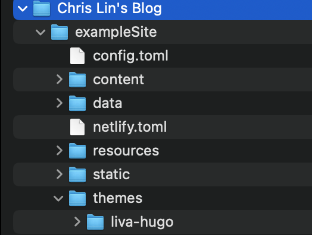
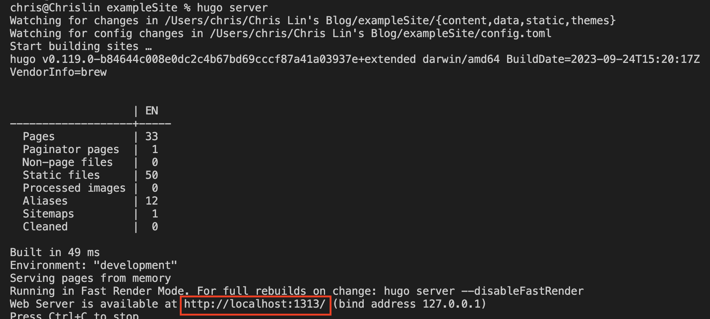

使用 Hugo 在 GitHub 上架設個人網站
前言
之前用的 Jekyll 主題創作者沒在維護，現在版本的 GitHub 不能 build 了，轉移至 Hugo 架設個人網站
為什麼選擇 Hugo？
Hugo 是一個以 Go 語言編寫的快速靜態網站生成器，它提供了許多優點，包括：
-
速度快： Hugo 生成靜態網站的速度極快，這意味著網站的頁面將在訪問者瀏覽時迅速加載。
-
主題和佈局： Hugo 具有豐富的主題和佈局選擇，使你能夠輕鬆自定義你的網站外觀。
-
活躍的社群： Hugo 有一個活躍的社群，提供了大量的支持和資源，幫助你解決問題。
-
易於安裝和部署： Hugo 的安裝和部署過程非常簡單，無論你是使用本地主機還是部署到網路主機，都能輕鬆完成。
如何在 Mac 上使用 Hugo 運行個人網站？
步驟 1：安裝 Hugo
安裝 Homebrew
/bin/bash -c "$(curl -fsSL https://raw.githubusercontent.com/Homebrew/install/HEAD/install.sh)"
安裝 Hugo
brew install hugo
確認 Hugo 安裝成功，並且有出現版本訊息
hugo --version
因為 macOS 14 的預覽版 (pre-release version)， Homebrew 不支援，所以在安裝 Hugo 和 Git 遇到一些問題。
可以用以下指令安裝
brew install --build-from-source git
brew install --build-from-source hugo
步驟 2：匯入主題
這邊我是使用 liva-hugo 主題。
這裡示範下載 git 上面 zip，下載解壓縮後，裡面有一個資料夾叫exampleSite，把他拉出來放置桌面或其他想存放的路徑。
然後在exampleSite底下建立一個資料夾命名為themes(注意! 一定要是這個名稱 )，
然後再把解壓縮後的liva-hugo-master，改名為liva-hugo，將這個資料夾放置themes底下。

步驟 3：啟動 Local Server
打開終端機，進去exampleSite，並啟動 server，將網址放入網頁瀏覽器中，即可以看到畫面。
hugo server

步驟 4：設置網站配置
可以從根目錄下的config.toml文件中設置網站配置文件，包括站點標題、作者資訊、主題選擇和其他自定義設置。
介紹其中幾個配置
baseURL = https://github帳號.github.io
title = 網站標題配置
languageCode = 網站語系配置
[menu] = 導航配置
[params] = 默認參數配置
[params.search] = 搜索功能配置
[params.cookies] = Cookie 的啟用及有效時間配置
[params.social] = 社交媒體配置
步驟 5：建立 GitHub Page Repository
首先到你的 GitHub 主頁，並且在右上角找到「+」，點選「New Repository」，
Repository Name 填寫「使用者名稱.github.io」。
步驟 6：發布至 GitHub Pages 上
編輯好後，在終端機輸入hugo，打包完成將創建一個public目錄`，
將public裡面所有資料夾和檔案複製到 Clone 下來的使用者名稱.github.io資料夾，推上 GitHub 即可完成部署。
git add . && git commit -m "first commit" && git push
結語
遷移個人網站從 Jekyll 到 Hugo 可能需要一些工作，但它將確保你的網站保持現代化，並且更易於維護。Hugo 是一個功能豐富且強大的工具，能夠幫助你建立一個引人注目的網站，並提供快速且優質的用戶體驗。